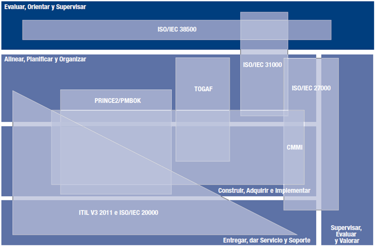

COBIT agrupa los mejores estándares, metodologías, guías y buenas prácticas dentro de su marco de trabajo, entre estas están:
- ISO/IEC 38500
- PRINCE2
- PMBOK
- TOGAF
- ISO/IEC 31000
- ISO/IEC 27000
- CMMI
- ITIL V3 2011
- ISO/IEC 20000
COBIT ayuda a las empresas a mantener el equilibrio entre la generación de beneficios y la optimización de los niveles de riesgo y el uso de recursos.
COBIT permite a las TI ser gobernadas y gestionadas de un modo holístico para toda la empresa, abarcando al negocio completo de principio a fin.
COBIT es genérico y útil para empresas de todos los tamaños, tanto comerciales, como sin ánimo de lucro o del sector público.